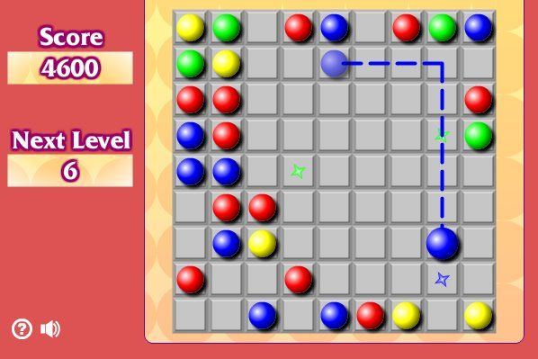

kamuoliukus
About me

Past Articles
- Vaginaliniai kamuoliukai - Aistra
Visiems linksmas pramogų mėgėjams, mes galime pasiūlyti įdomų žaidimą! Rasite neįprastą istoriją ir dizainą. - Vaginaliniai kamuoliukai: ką apie juos reikia žinoti ...
Kamuoliukus čiumpi, „bumčikus“ turi! Nuo 2019 m. vasario 4 d. iki 2019 m. kovo 31 d. registruokis žaidime perkant bent vieną iš išvardintų „Taffel“ produktų (pažymėtų arba nepažymėtų specialiu žaidimo lipduku): - Ramunėlės kamuoliukus su savo rankas - ATOMIYME.COM
Po to pasiruoštus vynuogių-sūrio kamuoliukus apvoliojame riešutų trupiniuose. Sudedame gautus vynuogių kamuoliukus ant lėkštės bei padedame į šaldytuvą. Prieš patiekdamos, palaikome kambario temperatūroje. Lepinamės! 5. Pastebėjimas: Tobulas užkandis ilgam vakaro pasisėdėjimui prie vyno. ;) 6. - Kaip virti kamuoliukus - lt.srathbun.com
teko išbandyti visokiausius kamuoliukus, kad tik tas išrankus vaikas valgytų.. šis eksperimentas išėjo vykęs, tik aišku, ne kasdienai.. varškės pusė kilo ( tryse labai greit suvalgėm, tai galima ir daugiau) sojos dribsnių gal 2 stiklinės; 1 ar 2 kiaušiniai; 1/2 stiklinės miltų (dedu spelta, arba rupūs miltai tinka) druskos ... - Sūrio-vynuogių kamuoliukai. Vyno draugai.
Žaidimo paleidimo golfo kamuoliukus. Jūs turite pradėti munite golfo kamuoliuką, kiek įmanoma.Kontrolė. : Žaisti su pele. - Kamuoliukus čiumpi, "bumčikus" turi! - Taffel
Kamuoliukus reikia paimti ir švelnia eiga įsidėti į savo vaginalinę angą. Nepamirškite lubrikanto, kurį taip pat galite įsigyti Fantazijos.lt e-parduotuvėje. Jūsų rutuliukai yra skirti vaginai, todėl oraliniams arba analiniams malonumams jie nėra visiškai pritaikyti. Kamuoliukus įsikišus, bandykite juos ten išlaikyti. Kartokite. - Zuma žaidimas kamuoliukus - Zumisland - Jeux de Zuma
Kaip virti kamuoliukus Šukutės, kaip ir visos jūros gėrybės, yra labainaudinga ir maistinga. Jų subtilus saldus skonis bus vertinamas kiekvieno jūros gėrybių mylėtojo. Bet norėdami gauti skanų patiekalų, turėtumėte žinoti, kaip virti kamuoliukus.</ p> - Vaginaliniai kamuoliukai, rutuliukai pigiau - Fantazijos.lt
„Turėdavome tradiciją sekmadienio rytais kepti blynus – vaikas vis prašydavo, o dabar juos teks dažnai užmaišyti iš vakaro“, – juokauja aktorius Džiugas Siaurusaitis (48 m.). - kamuoliukai | ką valgyti?!
Zuma žaidimas kamuoliukus. Gather identiškas kamuoliukus į grupes po 3 ar daugiau, kad jie išnyksta.Kontrolė. : Naudokite pelę, mesti kamuolį .. - Žaidimo paleidimo golfo kamuoliukus - Puttix
Kai kurie žmonės renkasi iš dviejų ar daugiau rutuliukų pagamintus vaginalinius kamuoliukus, tuo tarpu kiti teigia, jog naudoti vieno kamuoliuko žaisliuką yra daug patogiau, kadangi jis mažiau linkęs išslysti. Taip pat renkantis vaginalinius kamuoliukus, atkreipkite dėmesį į jų dydį ir svorį.
Menu
- Vaginaliniai kamuoliukai - Aistra
- Vaginaliniai kamuoliukai: ką apie juos reikia žinoti ...
- Ramunėlės kamuoliukus su savo rankas - ATOMIYME.COM
- Kaip virti kamuoliukus - lt.srathbun.com
- Sūrio-vynuogių kamuoliukai. Vyno draugai.
- Kamuoliukus čiumpi, "bumčikus" turi! - Taffel
- Zuma žaidimas kamuoliukus - Zumisland - Jeux de Zuma
- Vaginaliniai kamuoliukai, rutuliukai pigiau - Fantazijos.lt
- kamuoliukai | ką valgyti?!
- Žaidimo paleidimo golfo kamuoliukus - Puttix
Žaidimas Penki kamuoliukai internete. Žaiskite nemokamai

× Žaidimas Penki kamuoliukai
Wheely. 1 dalis Fireboy ir WaterGirl 4: į Crystal šventykla Wheely automobilis. 2 dalis Wheely automobilis. 3 dalis Sugavimo saldainiai Fruita Crush Jellydad herojus Kryžiukai-nuliukai Rutuliai - Bubble shooter Pekino metro Surfers Tarzan kamuolys Wheely automobilis. 4 dalis: Kelionės laiku Imperia online 3 1 2 3 4 5 (Total 8) Tamsesnė Panašūs flash žaidimai Žaidimo istorija Žymės Panašūs flash žaidimai Sparta War of Empires Gudrus mašina 6: Pasaka Wheely automobilis. 5 dalis: Armagedonas Nightflies Supermenas iš pareigų Game of Emperors Cut Rope: Kelionės laiku Transmorpher 3 oro uostas skubėti Stormfall Evermoor likimo temą Žūklės dvikovos Kombainas! Dino robotas. Tyrannosaurus Solider Stripping kalėjimas Ninja Miner 2 Kempiniukas želė Puzzle 3 Bob plėšikas 2 Fruita Braukimas 2 Sraigė Bob JackSmith - Džekas Smitas Piratai ir patrankos šliaužti. IO Ninja Eiti: Dėlionės Kaya Metro Surfers World Tour Mumbajus Wheely 7: detektyvas Metro Surfers World Tour Londonas Burbulai žiurkėnas Wheely 8 užsieniečiai Spalva Perjungti iššūkiai leidimas Sponge Bob matematikos egzamino Juokingi Sužinokite Bobas plėšikas 3 Truck Loader 4 Gauti tuos protus Kalbant katė Tomas ir Angela limuzinas 3 panda Žaidimai internete Burbulas Žaidimai Loginiai žaidimai Trys iš eilės Puzzle Linijos Kamuoliai 3 iš eilės Protingas KamuoliaiPenki kamuoliukai (Blob Five):
Penki blob - Loginis žaidimas, kur jūs turite liniją iki spalvoti rutuliai į liniją. Pavyzdžiui: Jūs turite 5 žalia kamuoliukus ant žaidimo lauko, jūsų užduotis - įtraukti juos dabar taip, kad kairysis horizontali, vertikali arba įstriža linija. Naudokite pelę kontroliuoti.
Visi geriausi žaidimai internete. Herojai Žanrai Žymos
Žaidimai dviems Sportinės dviems Kova už du Fotografavimo dviems Fireboy ir WaterGirl Žaidimai berniukams Tankai Dabar Šaudymas Lenktynių žaidimai Zombiai Nuotykių Futbolas Ninja kovos Minecraft Žmogus-voras Strategija karas snaiperis sporto Flying žaidimai Žaidimai mergaitėms Winx Atsakinėti pamoką iš špargalkos Čiustyti Barbė Monster Aukštos Testai Maisto gaminimas maisto Makiažas kirpėjas Kissing Disney Princess Rapunzel Žaidimai vaikams Kūdikių Šviesiai ruda Animaciniai žaidimai Lego Dėlionės Švietimo Kempiniukas Transformeriai Automobiliai Kikoriki Maša ir Lokys Ben 10 Naruto Spalvinimas Flash žaidimai 3D žaidimai Burbulai Žemės ūkio Nuotykių Mario Sonic žaidimai Loginiai Mažongas Papa Louie Questai Sraigė Bobas Online žaidimai Žvejyba © game-game - Nemokami online flash žaidimai Žaidimai internete Žymos Grįžtamasis ryšys SkelbimaiPosted by Jack  Read more
Read more  Comments (15)
Comments (15)  2020.10.29 11:32
2020.10.29 11:32